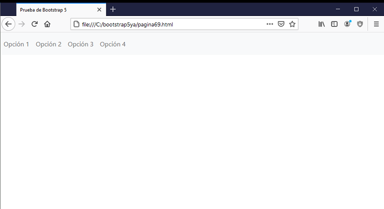
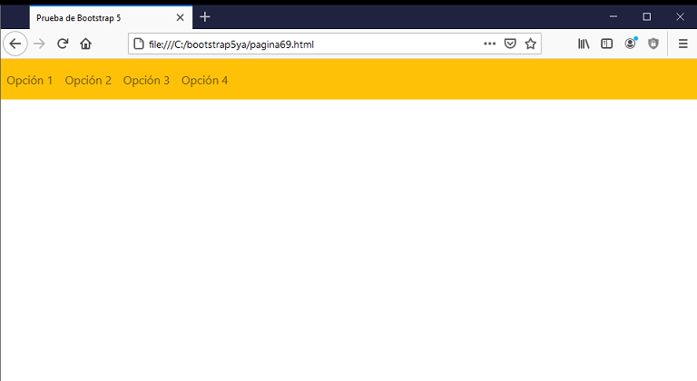
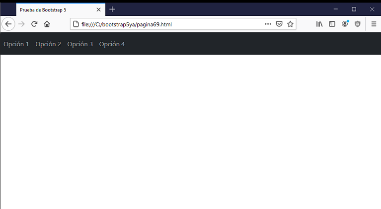

Bootstrap 5 dispone la posibilidad de implementar barras horizontales de opciones. Cuando el ancho de las opciones no entran en pantalla se muestran una abajo de la otra.
Veamos la sintaxis para implementar un menú de opciones en la parte superior de la página:
<!doctype html>
<html>
<head>
<title>Prueba de Bootstrap 5</title>
<meta charset="utf-8">
<meta name="viewport" content="width=device-width, initial-scale=1, shrink-to-fit=no">
<link href="https://cdn.jsdelivr.net/npm/bootstrap@5.0.0/dist/css/bootstrap.min.css" rel="stylesheet" integrity="sha384-wEmeIV1mKuiNpC+IOBjI7aAzPcEZeedi5yW5f2yOq55WWLwNGmvvx4Um1vskeMj0" crossorigin="anonymous">
</head>
<body>
<nav class="navbar navbar-expand-sm navbar-light bg-light">
<!-- enlaces -->
<ul class="navbar-nav">
<li class="nav-item">
<a class="nav-link" href="#">Opción 1</a>
</li>
<li class="nav-item">
<a class="nav-link" href="#">Opción 2</a>
</li>
<li class="nav-item">
<a class="nav-link" href="#">Opción 3</a>
</li>
<li class="nav-item">
<a class="nav-link" href="#">Opción 4</a>
</li>
</ul>
</nav>
</body>
</html>
En el navegador la barra de navegación se ve así:

Mediante las clases:
Indicamos en que momento la barra debe colapsar y mostrarse las opciones una debajo de otra (esto debido a que los dispositivos pequeños no pueden mostrar la barra en forma horizontal)
Si queremos podemos utilizar como color de fondo de la barra de navegación cualquiera de los colores contextuales:
Si fijamos con la clase bg-warning luego tenemos el siguiente resultado:

Si queremos los hipervínculos de color blanco debemos cambiar la clase "navbar-light" por "navbar-dark"
Por ejemplo si fijamos estos valores:
<nav class="navbar navbar-expand-sm navbar-dark bg-dark">
Luego la barra queda con el siguiente color:
